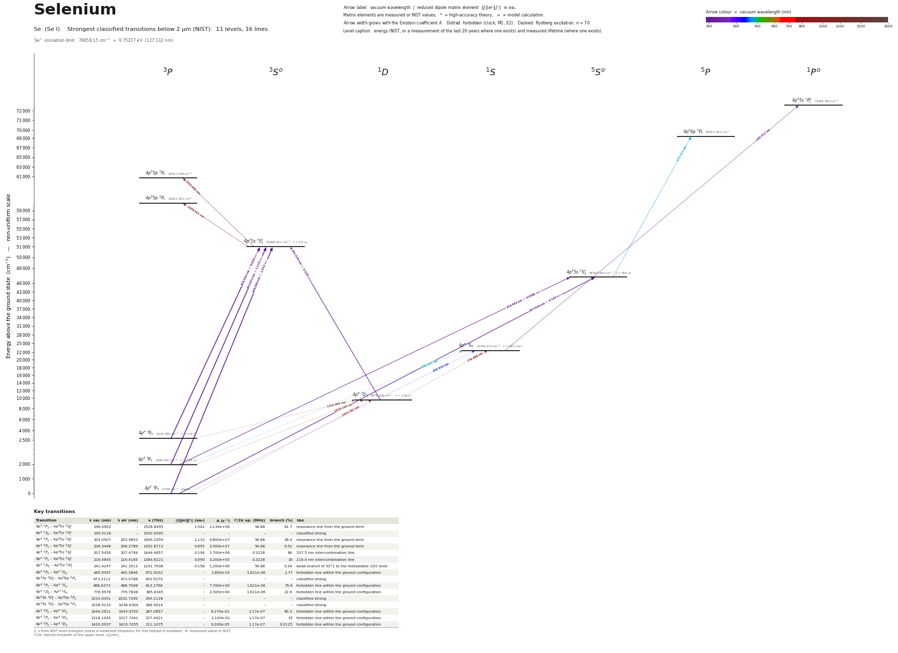

Selenium energy level diagram
Energy levels and transitions of neutral selenium (Se I): the 16 strongest classified lines below 2 µm from the NIST Atomic Spectra Database and the 11 levels they connect, each line with its vacuum wavelength, frequency and, for 6 of them, the reduced dipole matrix element derived from the NIST transition rate. Measured lifetimes, transition rates, hyperfine constants and isotope shifts from the literature are included, each with its citation.
Hover a line or a level to isolate it, click to keep it selected. Scroll to zoom, drag to move.

Download: diagram (PDF) diagram (SVG) transitions (CSV) levels (CSV) source code

Key transitions of selenium
| Transition | λ vac (nm) | λ air (nm) | ν (THz) | |⟨J‖er‖J′⟩| (ea₀) | A (s⁻¹) | Γ/2π up. (MHz) | branch (%) | Use |
|---|---|---|---|---|---|---|---|---|
| 4p4 3P2 – 4p35s 3S°1 | 196.0902 | – | 1528.8495 | 1.542 | 2.130e+08 | 54.88 | 61.7 | resonance line from the ground term |
| 4p4 1S0 – 4p35s 1P°1 | 199.5118 | – | 1502.6305 | – | – | – | – | classified strong |
| 4p4 3P1 – 4p35s 3S°1 | 204.0507 | 203.9852 | 1469.2059 | 1.110 | 9.800e+07 | 54.88 | 28.4 | resonance line from the ground term |
| 4p4 3P0 – 4p35s 3S°1 | 206.3448 | 206.2789 | 1452.8713 | 0.655 | 3.300e+07 | 54.88 | 9.52 | resonance line from the ground term |
| 4p4 3P2 – 4p35s 5S°2 | 207.5456 | 207.4794 | 1444.4657 | 0.194 | 1.700e+06 | 0.3228 | 84 | 207.5 nm intercombination line |
| 4p4 3P1 – 4p35s 5S°2 | 216.4845 | 216.4165 | 1384.8221 | 0.090 | 3.200e+05 | 0.3228 | 16 | 216.4 nm intercombination line |
| 4p4 1D2 – 4p35s 3S°1 | 241.4247 | 241.3513 | 1241.7638 | 0.158 | 1.200e+06 | 54.88 | 0.34 | weak branch of 3S°1 to the metastable 1D2 level |
| 4p4 3P2 – 4p4 1S0 | 445.5097 | 445.3846 | 672.9202 | – | 1.800e-01 | 1.621e-06 | 1.77 | forbidden line within the ground configuration |
| 4p35s 5S°2 – 4p36p 5P3 | 473.2112 | 473.0788 | 633.5279 | – | – | – | – | classified strong |
| 4p4 3P1 – 4p4 1S0 | 488.8373 | 488.7008 | 613.2766 | – | 7.700e+00 | 1.621e-06 | 75.6 | forbidden line within the ground configuration |
| 4p4 1D2 – 4p4 1S0 | 776.9976 | 776.7838 | 385.8345 | – | 2.300e+00 | 1.621e-06 | 22.6 | forbidden line within the ground configuration |
| 4p35s 3S°1 – 4p35p 3P2 | 1033.0091 | 1032.7260 | 290.2128 | – | – | – | – | classified strong |
| 4p35s 3S°1 – 4p35p 3P1 | 1038.9210 | 1038.6364 | 288.5614 | – | – | – | – | classified strong |
| 4p4 3P2 – 4p4 1D2 | 1044.2611 | 1043.9750 | 287.0857 | – | 6.270e-01 | 1.17e-07 | 85.3 | forbidden line within the ground configuration |
| 4p4 3P1 – 4p4 1D2 | 1318.1045 | 1317.7441 | 227.4421 | – | 1.100e-01 | 1.17e-07 | 15 | forbidden line within the ground configuration |
| 4p4 3P0 – 4p4 1D2 | 1420.0937 | 1419.7055 | 211.1075 | – | 9.200e-05 | 1.17e-07 | 0.0125 | forbidden line within the ground configuration |
λ, ν from NIST level energies unless a measured frequency for this isotope is available. A: measured value or NIST. Γ/2π: natural linewidth of the upper level, 1/(2πτ).
Listed Se transitions below 2 µm
| Lower level | Upper level | λ vacuum (nm) | λ air (nm) | ν (THz) | Type | |⟨J‖er‖J′⟩| (ea₀) | A (s⁻¹) | Branching (%) | Source of matrix element / A |
|---|---|---|---|---|---|---|---|---|---|
| 4p4 3P2 | 4p35s 3S°1 | 196.0902 | – | 1528.8495 | E1 | 1.542 measured | 2.130e+08 measured | 61.7 | D. C. Morton, Astrophys. J. Suppl. 130, 403 (2000), as listed (A_ki ref. M00) in the NIST… |
| 4p4 1S0 | 4p35s 1P°1 | 199.5118 | – | 1502.6305 | E1 | – | – | – | – |
| 4p4 3P1 | 4p35s 3S°1 | 204.0507 | 203.9852 | 1469.2059 | E1 | 1.110 measured | 9.800e+07 measured | 28.4 | D. C. Morton, Astrophys. J. Suppl. 130, 403 (2000), as listed (A_ki ref. M00) in the NIST… |
| 4p4 3P0 | 4p35s 3S°1 | 206.3448 | 206.2789 | 1452.8713 | E1 | 0.655 measured | 3.300e+07 measured | 9.52 | D. C. Morton, Astrophys. J. Suppl. 130, 403 (2000), as listed (A_ki ref. M00) in the NIST… |
| 4p4 3P2 | 4p35s 5S°2 | 207.5456 | 207.4794 | 1444.4657 | E1 (intercombination) | 0.194 measured | 1.700e+06 measured | 84 | D. C. Morton, Astrophys. J. Suppl. 130, 403 (2000), as listed (A_ki ref. M00) in the NIST… |
| 4p4 3P1 | 4p35s 5S°2 | 216.4845 | 216.4165 | 1384.8221 | E1 (intercombination) | 0.0895 measured | 3.200e+05 measured | 16 | D. C. Morton, Astrophys. J. Suppl. 130, 403 (2000), as listed (A_ki ref. M00) in the NIST… |
| 4p4 1D2 | 4p35s 3S°1 | 241.4247 | 241.3513 | 1241.7638 | E1 (intercombination) | 0.158 measured | 1.200e+06 measured | 0.34 | Ubelis and Berzinsh, Phys. Scr. 34, 805 (1986) (emission branching; values read in the ab… |
| 4p4 3P2 | 4p4 1S0 | 445.5097 | 445.3846 | 672.9202 | E2 | – | 1.800e-01 theory | 1.77 | R. H. Garstang, J. Res. Natl. Bur. Stand. 68A, 61 (1964), Table 25 (intermediate-coupling… |
| 4p35s 5S°2 | 4p36p 5P3 | 473.2112 | 473.0788 | 633.5279 | E1 | – | – | – | – |
| 4p4 3P1 | 4p4 1S0 | 488.8373 | 488.7008 | 613.2766 | M1 | – | 7.700e+00 theory | 75.6 | R. H. Garstang, J. Res. Natl. Bur. Stand. 68A, 61 (1964), Table 25 (intermediate-coupling… |
| 4p4 1D2 | 4p4 1S0 | 776.9976 | 776.7838 | 385.8345 | E2 | – | 2.300e+00 theory | 22.6 | R. H. Garstang, J. Res. Natl. Bur. Stand. 68A, 61 (1964), Table 25 (intermediate-coupling… |
| 4p35s 3S°1 | 4p35p 3P2 | 1033.0091 | 1032.7260 | 290.2128 | E1 | – | – | – | – |
| 4p35s 3S°1 | 4p35p 3P1 | 1038.9210 | 1038.6364 | 288.5614 | E1 | – | – | – | – |
| 4p4 3P2 | 4p4 1D2 | 1044.2611 | 1043.9750 | 287.0857 | M1 | – | 6.270e-01 theory | 85.3 | R. H. Garstang, J. Res. Natl. Bur. Stand. 68A, 61 (1964), Table 25 (intermediate-coupling… |
| 4p4 3P1 | 4p4 1D2 | 1318.1045 | 1317.7441 | 227.4421 | M1 | – | 1.100e-01 theory | 15 | R. H. Garstang, J. Res. Natl. Bur. Stand. 68A, 61 (1964), Table 25 (intermediate-coupling… |
| 4p4 3P0 | 4p4 1D2 | 1420.0937 | 1419.7055 | 211.1075 | E2 | – | 9.200e-05 theory | 0.0125 | R. H. Garstang, J. Res. Natl. Bur. Stand. 68A, 61 (1964), Table 25 (intermediate-coupling… |
Reduced dipole matrix elements follow the convention A = ω³|d|²/(3πε₀ħc³(2J′+1)), with J′ the upper level. Tags show where a number comes from: measured, NIST compilation, high-accuracy theory, or a model calculation.
Se energy levels
Se⁺ ionisation limit 78658.15 cm⁻¹ = 9.75237 eV (127.132 nm)
Sources
- Bengtsson, Berzinsh, Larsson, Svanberg, Z. Phys. D 23, 29 (1992) (short-pulse laser excit…
- Bengtsson, Berzinsh, Larsson, Svanberg, Zerne, J. Phys. II France 2, 773 (1992) (time-res…
- D. C. Morton, Astrophys. J. Suppl. 130, 403 (2000), as listed (A_ki ref. M00) in the NIST…
- NIST ASD level energies
- R. H. Garstang, J. Res. Natl. Bur. Stand. 68A, 61 (1964), Table 25 (intermediate-coupling…
- R. H. Garstang, J. Res. Natl. Bur. Stand. 68A, 61 (1964), Table 25. Note: derived: 1/sum …
- R. H. Garstang, J. Res. Natl. Bur. Stand. 68A, 61 (1964), Table 25. Note: derived: 1/sum …
- R. H. Garstang, J. Res. Natl. Bur. Stand. 68A, 61 (1964), Table 25. Note: derived: 1/sum …
- R. H. Garstang, J. Res. Natl. Bur. Stand. 68A, 61 (1964), Table 25. Note: derived: 1/sum …
- Ubelis and Berzinsh, Phys. Scr. 34, 805 (1986) (emission branching; values read in the ab…
NIST ASD has Se I level energies but no classified lines; the E1 transitions here are the classified persistent lines of the NIST Handbook of Basic Atomic Spectroscopic Data, re-expressed with the NIST ASD level energies of data/nist/Se_I_levels.tsv (identification by configuration, term and J). The 'wavelength_nm' field gives the observed wavelength as listed (vacuum below 200 nm, air above) with its 'medium'; the wavelength in each label is the vacuum Ritz value from the NIST ASD energies. A values of the six 5s-4p4 lines are those of Morton 2000 as listed by NIST (compilation: Bengtsson et al. laser lifetimes x Ubelis and Berzinsh branching); rme_J_ea0 is derived from them (convention of SCHEMA.md). Branching fractions of the 3S°1 level are derived from the four Ubelis and Berzinsh A values; those of 5S°2 from the two Morton A values. Lifetimes of the 4p4 metastable levels and all forbidden-line rates are 1964 THEORY (Garstang); A_s of a forbidden line is the sum of the calculated M1 and E2 parts given in its note. Natural selenium is 92 % even isotopes (I = 0) and 7.6 % 77Se (I = 1/2). Second pass 2026-10-01: Bengtsson et al., Z. Phys. D 23, 29 (1992) was read directly (first two pages): tau(3S°1) = 2.9(5) ns and f_abs(196.0 nm) = 0.074(16) are confirmed. Roederer & Lawler 2012 (Table 5) recommend the Morton A values with uncertainties 213(37), 98(17), 33(6) and 1.70(10) x 10^6 s^-1 (stored as alternatives) and note that isotope shifts are small and the 77Se hyperfine str
Atoms with measured data
- Lithium-632 levels, 85 lines
- Lithium-732 levels, 85 lines
- Beryllium-917 levels, 26 lines
- Sodium-2336 levels, 106 lines
- Magnesium-2418 levels, 61 lines
- Magnesium-2518 levels, 61 lines
- Potassium-3934 levels, 84 lines
- Potassium-4034 levels, 84 lines
- Potassium-4134 levels, 84 lines
- Calcium-4035 levels, 61 lines
- Calcium-4335 levels, 61 lines
- Chromium-5256 levels, 87 lines
- Chromium-5356 levels, 87 lines
- Rubidium-8536 levels, 94 lines
- Rubidium-8736 levels, 94 lines
- Strontium-8440 levels, 70 lines
- Strontium-8640 levels, 70 lines
- Strontium-8740 levels, 70 lines
- Strontium-8840 levels, 70 lines
- Cadmium-11115 levels, 21 lines
- Cadmium-11315 levels, 21 lines
- Cadmium-11415 levels, 21 lines
- Caesium-13331 levels, 79 lines
- Barium-13744 levels, 89 lines
- Barium-13844 levels, 89 lines
- Dysprosium-16139 levels, 55 lines
- Dysprosium-16239 levels, 55 lines
- Dysprosium-16339 levels, 55 lines
- Dysprosium-16439 levels, 55 lines
- Erbium-16673 levels, 90 lines
- Erbium-16773 levels, 90 lines
- Erbium-16873 levels, 90 lines
- Thulium-16972 levels, 73 lines
- Ytterbium-17118 levels, 26 lines
- Ytterbium-17318 levels, 26 lines
- Ytterbium-17418 levels, 26 lines
- Mercury-19927 levels, 47 lines
- Mercury-20127 levels, 47 lines
- Mercury-20227 levels, 47 lines